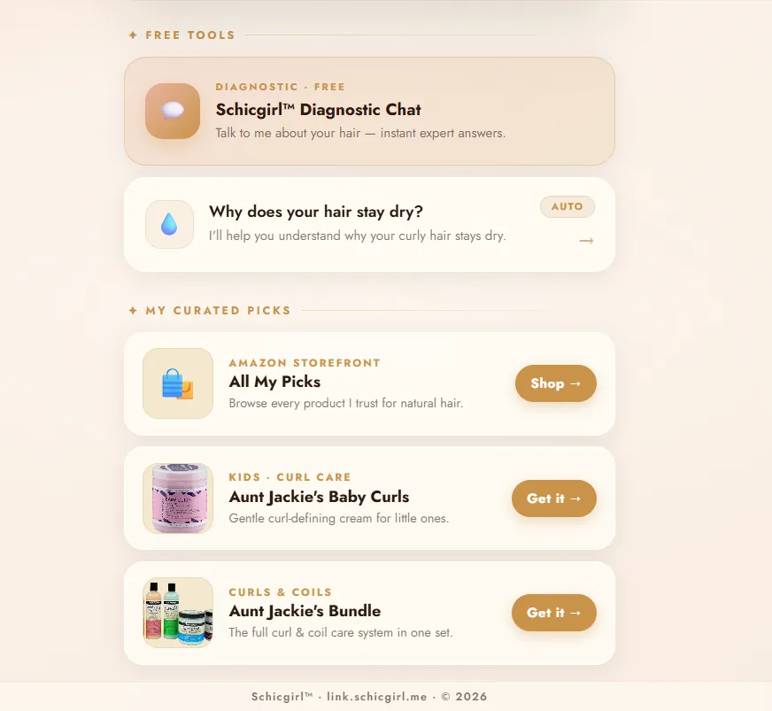
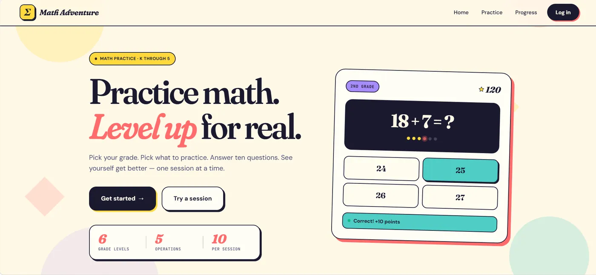

Schicgirl
Web tools and a membership platform for a natural-hair brand. My work spans PostgreSQL access control, session recovery, and consistent French/English data.
JavaScript · Supabase / PostgreSQL · HTML / CSS
Read case studyHi, I’m Nabintou.
Software Engineering student at UT Dallas, graduating May 2027. I build and maintain Schicgirl’s bilingual web platform. I’m also developing NABIELA notes, a private study application.
Open to software engineering internships & junior roles

Web tools and a membership platform for a natural-hair brand. My work spans PostgreSQL access control, session recovery, and consistent French/English data.
JavaScript · Supabase / PostgreSQL · HTML / CSS
Read case studyA private study notebook with lecture capture, editable diagrams, and local recovery. I define the workflows and guide AI-assisted implementation.
JavaScript · IndexedDB · Canvas · Windows launchers
Read case study
A K–5 math practice application built with a team, then refactored independently into Spring services, structured API responses, and a modular frontend.
Java · Spring Boot · JUnit / MockMvc · JavaScript
Read case studySince 2024, I’ve worked as the freelance developer behind Schicgirl. That work has taken me from shipping pages to handling authentication, database permissions, and bugs affecting returning members.
I work in French and English. My core tools are Java, JavaScript, SQL, and Python, with Spring Boot, PostgreSQL, Flask, and Git. I use AI during development and review and test what I ship.
Earlier projects & courseworkI’m looking for a software engineering internship or junior role where I can contribute, learn from a team, and keep shipping.
nabintousfofana@gmail.com